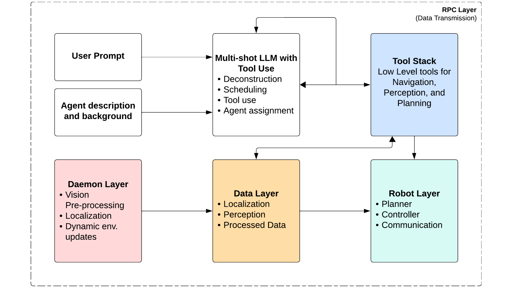
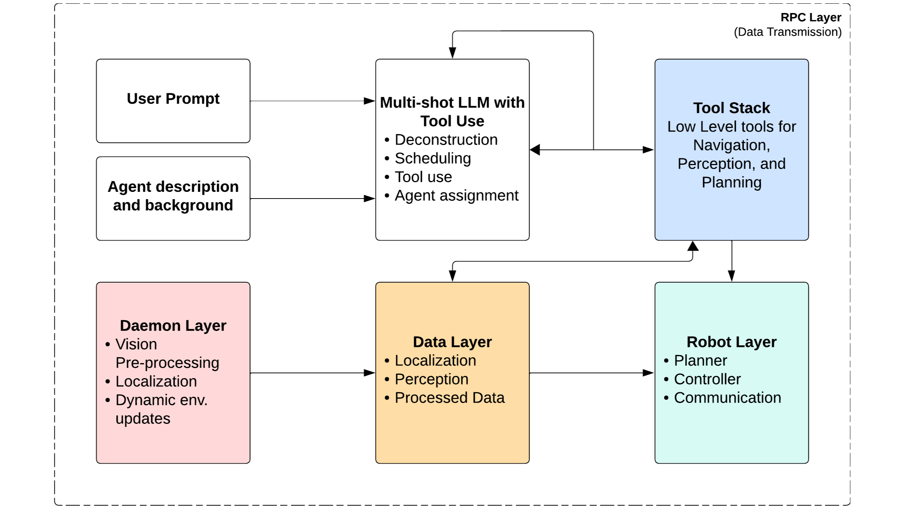
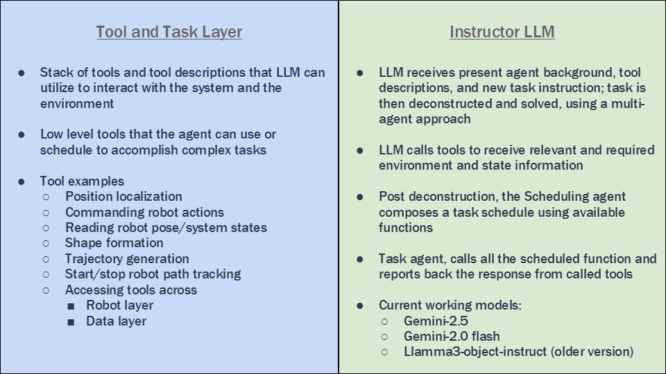
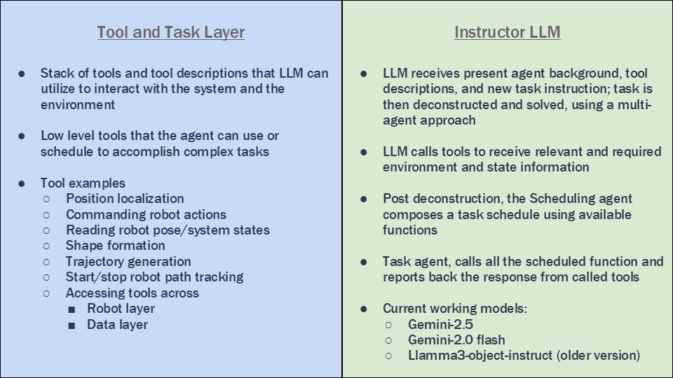

Project
Autonomous Multi-Robot Control via LLM/VLM-Driven Embodied AI Frameworks
A “zero-code robotics” system that takes high-level natural language goals and turns them into executable multi-robot behaviors. The framework bridges LLM reasoning (task deconstruction and scheduling), VLM perception (semantic object understanding), global vision-based localization, and real-time navigation/control across multiple mobile robots.
Project Demo
Highlights
- Task Planning & AI: Built a natural-language “zero-code” interface using an LLM for high-level reasoning and a VLM for semantic understanding (query / detect / point).
- Agentic Workflows: Implemented a pipeline that converts instructions into executable task schedules for multi-robot coordination (e.g., collaborative color sorting and word formation).
- Perception & Localization: Engineered a global top-down vision system with multi-camera stitching, ChArUco calibration, and homography alignment.
- Robot Tracking: Localized sensor-less differential-drive robots via ArUco marker pose estimation in a shared workspace.
- Environment Monitoring: Added dynamic obstacle tracking via background subtraction + blur for collision-aware updates.
- Navigation & Planning: Used RRT* for collision-free paths with online replanning when the scene changes or paths invalidate.
- Hybrid Control Stack: Pure Pursuit for efficient tracking + PID for precise terminal docking and alignment.
- Systems Architecture: Designed a low-latency RPC server (ZMQ + compact serialization) with multi-worker pools to connect Python planners to hardware execution.
- Embedded Communication: Implemented a protocol-agnostic ESP32 wireless stack supporting Wi-Fi, BLE, and ESP-NOW for high-frequency command streaming.
- User Interface: Built a GUI dashboard for live robot state, trajectories, and natural-language interaction.
System Overview
The architecture follows a clear “thinking → acting” pipeline: an LLM interprets intent and generates a task plan, perception/localization provides world state updates, and the navigation/control stack executes motion safely in a dynamic scene.
Architecture
 

 

Tech Stack
LLM/VLM + Agentic Planning
Natural language task deconstruction, tool calling, and scheduling with semantic perception.
Vision + Localization
Multi-camera stitching, calibration, homography alignment, ArUco tracking, dynamic obstacle masks.
Planning + Control
RRT* global planning, online replanning, Pure Pursuit tracking, PID for precise docking/alignment.
Networking + Embedded
Low-latency RPC bridge, high-frequency command streaming over ESP32 (Wi-Fi / BLE / ESP-NOW).